Pasporty slovenských měst: bez pasportu (nahoře, modře) a s pasportem (dole, červeně)
Řez zleva (A) doprava (B), ±10 m podél ulice, 10 px = 1 m. Silné čáry = okraje vozovky, tenké = ostatní hranice, žlutá = střed řezu, * = odhad. Ortofoto © GKÚ Bratislava, NLC (ZBGIS, CC BY 4.0).
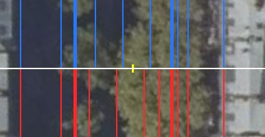
bv1 · Boulevard Saint-Germain (paris)
bez pasportu: chodnik 5.93 · stromorad 1.92 · krajnice 3.07 · pruh 4 · pruh 4 · krajnice 3.07 · chodnik 0.91 · stromorad 1.5 · chodnik 5.24
s pasportem: chodnik 5.93 · stromorad 1.92 · krajnice 2.17 · pruh 4 · pruh 4 · krajnice 2.17 · parkovani 1.8 · chodnik 0.91 · stromorad 1.5 · chodnik 5.24
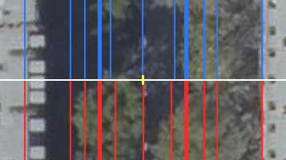
bv3 · Boulevard Voltaire (paris)
bez pasportu: chodnik 5.7 · stromorad 1.75 · cyklostezka 1.8 · krajnice 1.42 · pruh 4 · pruh 4 · krajnice 1.42 · cyklostezka 2.25 · stromorad 1.67 · chodnik 5.53
s pasportem: chodnik 5.7 · stromorad 1.75 · cyklostezka 1.8 · parkovani 2 · pruh 3.52 · pruh 3.52 · parkovani 1.8 · cyklostezka 2.25 · stromorad 1.67 · chodnik 5.53
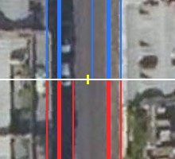
bv5 · Rue de Miromesnil (paris)
bez pasportu: chodnik 1.5 · pruh 4.2 · parkovani 2 · chodnik 1.55
s pasportem: chodnik 1.5 · parkovani 1.8 · pruh 4.4 · chodnik 1.55
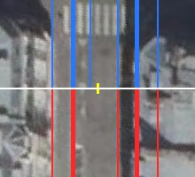
bv7 · Rue Fromentin (paris)
bez pasportu: chodnik 2.3 · parkovani 2 · pruh 3.07 · parkovani 2.13 · chodnik 2.4
s pasportem: chodnik 2.3 · pruh 5.07 · parkovani 2.13 · chodnik 2.4
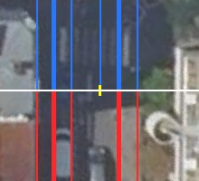
bv8 · Rue des Chaufourniers (paris)
bez pasportu: chodnik 1.85 · parkovani 2 · pruh 3.2 · parkovani 2 · chodnik 2.12
s pasportem: chodnik 1.85 · parkovani 2 · pruh 5.2 · chodnik 2.12
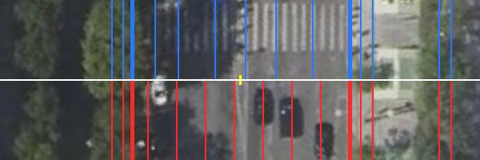
bv10 · Avenue des Champs-Élysées (paris)
bez pasportu: stromorad 1.41 · chodnik 1.09 · pruh 2.89 · pruh 2.89 · pruh 4.6 · pruh 3.8 · pruh 3.8 · pruh 4.6 · pruh 4.58 · chodnik 1.38 · stromorad 1.5 · chodnik 8.33 · stromorad 1.5 · chodnik 8.69
s pasportem: stromorad 1.41 · chodnik 1.09 · parkovani 2 · pruh 3.59 · pruh 3.59 · pruh 3.59 · pruh 3.59 · pruh 3.59 · pruh 3.59 · pruh 3.59 · chodnik 1.38 · stromorad 1.5 · chodnik 8.33 · stromorad 1.5 · chodnik 8.69
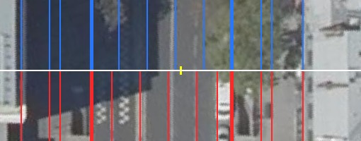
bv11 · Boulevard de Port-Royal (paris)
bez pasportu: chodnik 4.01 · stromorad 1.5 · chodnik 4.34 · krajnice 3.93 · pruh 4 · pruh 4 · pruh 4 · krajnice 3.93 · chodnik 4.17 · stromorad 1.5 · chodnik 4.38
s pasportem: chodnik 4.01 · stromorad 1.5 · chodnik 4.34 · krajnice 2.93 · pruh 4 · pruh 4 · pruh 4 · krajnice 2.93 · parkovani 2 · chodnik 4.17 · stromorad 1.5 · chodnik 4.38
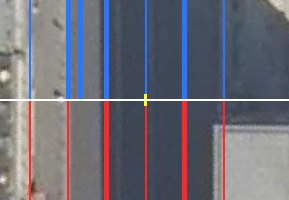
bv18 · Rue La Fayette (paris)
bez pasportu: chodnik 3.8 · krajnice 1.17 · cyklostezka 2.65 · pruh 4 · krajnice 3.82 · chodnik 3.9
s pasportem: chodnik 3.8 · bus_cyklo 3.82 · pruh 4 · krajnice 3.82 · chodnik 3.9
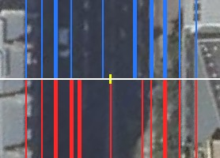
bv21 · Avenue Parmentier (paris)
bez pasportu: chodnik 1.99 · stromorad 1.71 · krajnice 2.07 · pruh 4 · pruh 4 · cyklostezka 2.07 · parkovani 1.7 · stromorad 1.94 · chodnik 2.01
s pasportem: chodnik 1.99 · stromorad 1.71 · parkovani 2 · cyklostezka 1.07 · pruh 4 · pruh 4 · krajnice 1.07 · parkovani 1.7 · stromorad 1.94 · chodnik 2.01
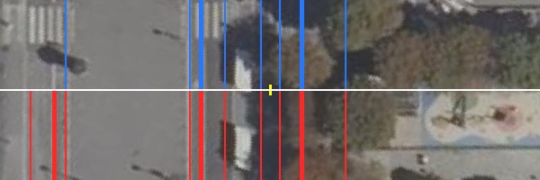
bv23 · Boulevard Marguerite de Rochechouart (paris)
bez pasportu: plocha 13.75 · cyklostezka 1.2 · krajnice 2.7 · pruh 4 · krajnice 2.12 · parkovani 2.38 · chodnik 4.9
s pasportem: chodnik 1.67 · krajnice 2.68 · pruh 4 · krajnice 2.68 · cyklostezka 1.3 · plocha 13.75 · cyklostezka 1.2 · krajnice 2.7 · pruh 4 · krajnice 2.12 · parkovani 2.38 · chodnik 4.9
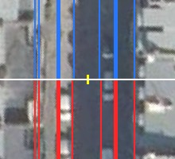
bv24 · Rue Auguste Bartholdi (paris)
bez pasportu: plocha 0.5 · chodnik 2.35 · parkovani 2 · pruh 3.2 · parkovani 2 · chodnik 2.4
s pasportem: plocha 0.5 · chodnik 2.35 · parkovani 1.8 · pruh 3.6 · parkovani 1.8 · chodnik 2.4
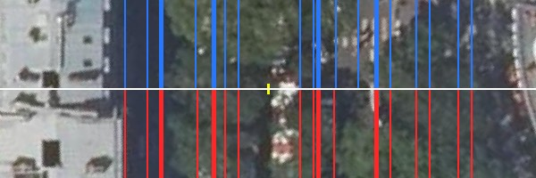
bv25 · Boulevard de Belleville (paris)
bez pasportu: chodnik 2.5 · cyklostezka 1.5 · pruh 3.9 · parkovani 2 · plocha 1.27 · stromorad 1.5 · plocha 6.92 · stromorad 1.5 · plocha 0.5 · parkovani 2 · pruh 2.5 · parkovani 2 · cyklostezka 1.6 · chodnik 2.92 · stromorad 1.5 · chodnik 3.18 · stromorad 1.5 · chodnik 7.75
s pasportem: chodnik 2.5 · cyklostezka 1.5 · pruh 4.1 · parkovani 1.8 · plocha 1.27 · stromorad 1.5 · plocha 6.92 · stromorad 1.5 · plocha 0.5 · parkovani 1.8 · pruh 4.7 · cyklostezka 1.6 · chodnik 2.92 · stromorad 1.5 · chodnik 3.18 · stromorad 1.5 · chodnik 7.75
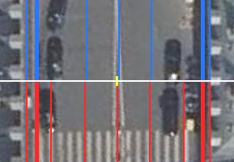
bv28 · Rue de Castiglione (paris)
bez pasportu: chodnik 1.15 · krajnice 6.28 · pruh 4 · pruh 4 · krajnice 6.28 · chodnik 0.85
s pasportem: chodnik 1.15 · parkovani 1.8 · krajnice 4.23 · pruh 4 · pruh 4 · krajnice 4.23 · parkovani 2.3 · chodnik 0.85